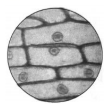
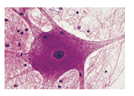
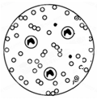
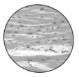
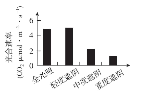
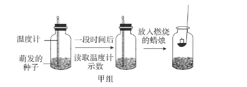
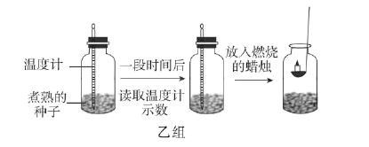

2022年北京市中考生物真题 · 选择题 第1、2、3、4、5题 · 对应解析
1. 同学们用光学显微镜观察到如图所示几种组织细胞，其中具有细胞壁的是
A.

B.
C.
D.
【答案】A
【解析】
【分析】一般来说，植物细胞具有细胞壁，动物细胞没有细胞壁。
【详解】A是洋葱表皮细胞，B是神经细胞，C是红细胞，D是肌肉细胞。
故选A。
2. 草履虫是单细胞生物，下列相关叙述错误的是
A. 能对外界刺激作出反应B. 自己制造有机物
C. 主要通过分裂产生新的个体D. 能排出代谢废物
【答案】B
【解析】
【分析】草履虫是一种身体很小，圆筒形的原生动物，它只由一个细胞构成，是单细胞生物，雌雄同体。最常见的是尾草履虫。体长只有180至280微米。它和变形虫的寿命最短，以小时来计算，寿命时间为一昼夜左右。正因为草履虫结构简单，常用为实验材料。
【详解】A．草履虫是单细胞生物，满足生物的特征，能对外界刺激作出反应，A正确。
B．草履虫体内没有叶绿体，不能自己制造有机物，属于异养型生物，B错误。
C．草履虫是单细胞生物，主要通过分裂产生新的个体，C正确。
D．草履虫是单细胞生物，满足生物的特征，能排出代谢废物，D正确。
故选B。
3. 2022年4月，我国科考队发现的一株高达83.2米的冷杉，刷新了中国最高树木纪录。水从该植株根部运输到茎顶端的主要动力是
A. 呼吸作用B. 光合作用C. 蒸腾作用D. 吸收作用
【答案】C
【解析】
【分析】水分从活的植物体表面以水蒸气状态散失到大气中的过程，叫做蒸腾作用。植物的蒸腾作用能促进水分的吸收，同时拉动水分与无机盐在体内的运输，保证各组织器官对水和无机盐的需要；另一方面，植物的蒸腾作用能降低叶片表面的温度，避免其因气温过高而被灼伤。
【详解】A．细胞利用氧，将有机物分解成二氧化碳和水，并且将储存在有机物中的能量释放出来，供生命活动的需要，这个过程叫做呼吸作用。呼吸作用主要是在线粒体中进行的，A错误。
B．光合作用实质上是绿色植物通过叶绿体，利用光能，把二氧化碳和水转化成储存能量的有机物，并且释放出氧气的过程，B错误。
C．水分从活的植物体表面以水蒸气状态散失到大气中的过程，叫做蒸腾作用。植物的蒸腾作用能促进水分的吸收，同时拉动水分与无机盐在体内的运输，C正确。
D．吸收作用主要是指根系对水分的吸收，D错误。
故选C。
4. 香果树是我国特有的濒危珍稀植物，自然条件下成苗率低。为促进香果树繁育，科研人员研究不同遮阴程度对幼苗光合速率的影响，结果如图。下列相关叙述错误的是

A. 四组幼苗应置于相同环境温度下B. 光合速率受光照强度的影响
C. 轻度遮阴时幼苗释放的氧气多D. 重度遮阴条件最适宜培育幼苗
【答案】D
【解析】
【分析】绿色植物通过叶绿体利用光能，把二氧化碳和水转化成储存能量的有机物（如淀粉），并且释放出氧气的过程，叫做光合作用。光合作用受光照强度的影响，一般来说，光照强度越强，光合作用速率越强。对照实验是在研究一种条件对研究对象的影响时，所进行的除了这种条件不同外，其他条件都相同的实验，这个不同的条件，就是唯一变量。一般的对实验变量进行处理的，就是实验组，没有对实验变量进行处理的就是对照组。该实验为了研究不同遮阴程度对幼苗光合速率的影响，设置了四组个组。从实验结果可知在轻度遮阴时幼苗光合作用强度最强。
【详解】A．该对照实验中只能有一个变量（遮阴程度），其它条件应相同。这样便于排除其他条件干扰实验。因此四组幼苗应置于相同环境温度下，A正确。
B．遮阴程度影响了光照强度，从实验结果可知幼苗的光合速率受光照强度的影响，B正确。
C．从实验结果可知，轻度遮阴时幼苗光合速率最强，释放的氧气最多，C正确。
D．重度遮阴条件下，幼苗的光合速率最低，产生的有机物过少，不利于幼苗的生长，D错误。
故选D。
5. 同学们在课堂上利用萌发的和煮熟的种子（初始温度相同）探究植物的呼吸作用，实验过程及结果如图。


下列相关叙述错误的是
A. 煮熟 种子无法进行呼吸作用
种子无法进行呼吸作用
B. 甲组温度计示数低于乙组
C. 甲组蜡烛迅速熄灭，乙组蜡烛继续燃烧
D. 实验可证明萌发的种子呼吸作用消耗氧气
【答案】B
【解析】
【分析】细胞利用氧，将有机物分解成二氧化碳和水，并且将储存在有机物中的能量释放出来，供生命活动的需要，这个过程叫做呼吸作用。呼吸作用主要是在线粒体中进行的。甲组萌发的种子进行呼吸作用，乙组不进行。
【详解】A．煮熟的种子，不能进行生命活动，无法进行呼吸作用，A正确。
B．呼吸作用能将储存在有机物中的能量释放出来，故甲组温度计示数高于乙组，B错误。
C．呼吸作用消耗了氧气，产生了二氧化碳，而蜡烛的燃烧需要氧气，故甲组蜡烛迅速熄灭。而乙组煮熟的种子未消耗氧气，故蜡烛继续燃烧，C正确。
D．通过对比，实验可证明萌发的种子呼吸作用消耗氧气，D正确。
故选B。